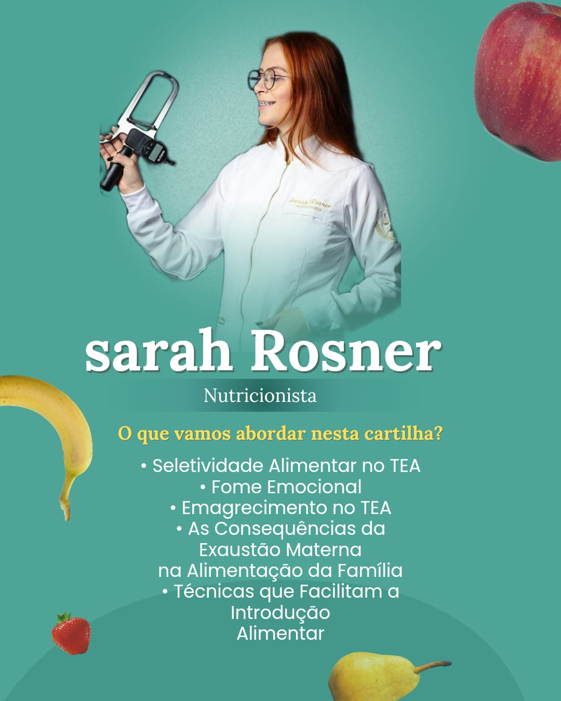
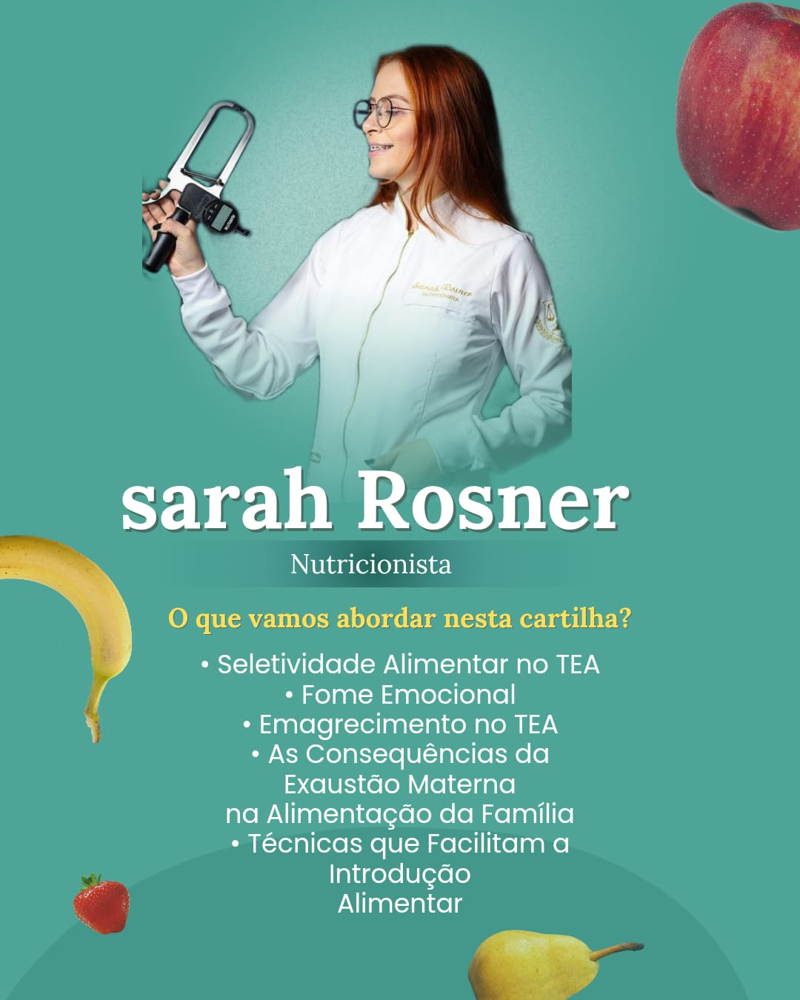

Ebook sobre Alimentação para Crianças com TEA
Alimentação e Transtorno do Espectro Autista (TEA): Um Guia Prático para Pais e
Responsáveis
A alimentação saudável é um dos pilares fundamentais para o desenvolvimento infantil, especialmente para
crianças com Transtorno do Espectro Autista (TEA). Essas crianças frequentemente enfrentam desafios únicos
que podem tornar a introdução de novos alimentos um processo complicado e, por vezes, estressante tanto para
os pais quanto para os pequenos. Pensando nisso, desenvolvi um ebook detalhado que visa esclarecer e
orientar pais e responsáveis sobre os principais aspectos da alimentação de crianças com TEA. A seguir, vou
compartilhar alguns dos tópicos abordados nesse material essencial.
Seletividade Alimentar no TEA
A seletividade alimentar é um comportamento comum em crianças com TEA. Elas tendem a ter preferências
alimentares muito restritas, muitas vezes limitando-se a alguns tipos de alimentos e texturas. Isso pode
dificultar a garantia de uma dieta balanceada e nutritiva. O ebook que desenvolvi oferece estratégias
práticas para lidar com essa seletividade, como a introdução gradual de novos alimentos e a criação de uma
atmosfera positiva durante as refeições, sem pressão para experimentar algo novo.
Fome Emocional
Outro tema discutido é a fome emocional, que se refere ao ato de comer em resposta a emoções, como
ansiedade, tédio ou tristeza, em vez de fome física. Crianças com TEA podem ser particularmente vulneráveis
a essa prática, o que pode levar ao desenvolvimento de hábitos alimentares prejudiciais. O ebook fornece
orientações para ajudar os pais a identificar sinais de fome emocional e a diferenciar da fome real, além de
sugerir alternativas para lidar com as emoções de forma mais saudável.
Emagrecimento no TEA
O emagrecimento em crianças com TEA pode ser um sinal de alerta, especialmente quando relacionado à
seletividade alimentar ou à fome emocional. O ebook destaca a importância de monitorar o peso da criança
regularmente e de buscar a orientação de um profissional de saúde para garantir que ela esteja recebendo
todos os nutrientes necessários para o seu crescimento e desenvolvimento.
As Consequências da Exaustão Materna na Alimentação da Família
Cuidar de uma criança com TEA pode ser extremamente desgastante, especialmente para as mães, que muitas
vezes assumem a maior parte das responsabilidades com a alimentação. A exaustão materna pode afetar
negativamente a dinâmica das refeições familiares, levando a escolhas alimentares menos saudáveis por
conveniência ou cansaço. O ebook sugere maneiras de aliviar esse fardo, como a delegação de tarefas, a
busca de apoio e o planejamento de refeições simples e nutritivas.
Técnicas que Facilitam a Introdução Alimentar
Finalmente, o ebook fornece uma série de técnicas que facilitam a introdução de novos alimentos na dieta
da criança com TEA. Dicas como a apresentação repetida de um novo alimento, a associação com alimentos
preferidos e a criação de rotinas alimentares são exemplos de abordagens que podem ajudar a criança a se
sentir mais confortável e aberta a experimentar novos sabores e texturas.
Conclusão
A alimentação de crianças com TEA exige atenção e estratégias específicas para garantir que elas recebam uma
nutrição adequada e saudável. Esse ebook serve como uma ferramenta valiosa para pais e responsáveis,
oferecendo orientações práticas e baseadas em evidências para enfrentar os desafios alimentares que essas
crianças podem enfrentar. Com paciência, apoio e as técnicas certas, é possível promover uma alimentação
equilibrada e saudável, contribuindo para o bem-estar geral da criança.
Adquira o Ebook Completo
Se você se interessou por esse material, saiba que o ebook completo está disponível para compra. Ele foi
cuidadosamente elaborado para fornecer suporte detalhado e prático, ajudando você a cuidar melhor da
alimentação do seu filho. Para adquiri-lo ou obter mais informações, entre em contato.